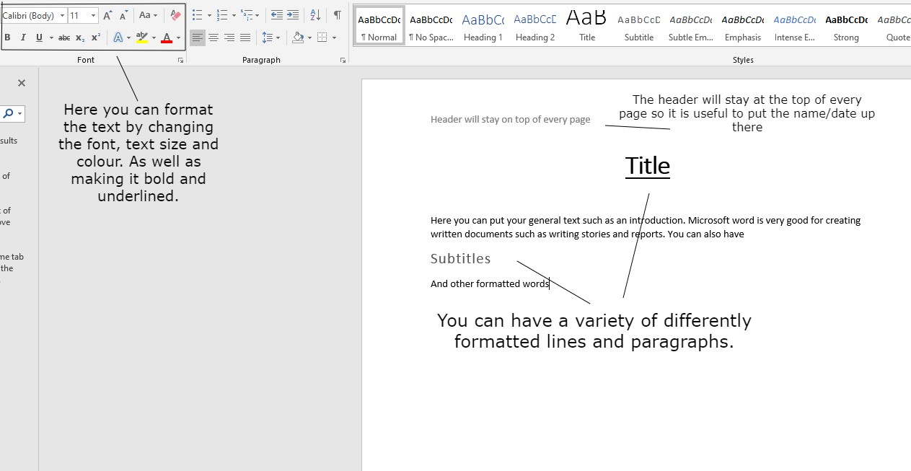

Microsoft Word is a word processing software program that is a part of the Microsoft Office suite. It allows users to create and edit documents, such as letters, reports, and resumes. With Word, you can easily add text, images, and other media to your document and format it to suit your needs.
One of the most useful features of Word is the ability to save and share documents. You can save your document to your computer or to a cloud storage service like OneDrive, allowing you to access it from anywhere with an internet connection. You can also share your document with others by sending them a link or emailing them the file.
Word also has a number of built-in tools to help you create professional-looking documents. For example, you can use the spell checker to check your spelling and grammar, and the thesaurus to find synonyms for words. You can also use the formatting tools to adjust the appearance of your document, such as changing the font, font size, and margins.
Another useful feature of Word is the ability to insert and edit tables, charts, and other graphics. This can help you organize and present your data in a clear and visually appealing way. You can also insert footnotes and endnotes to provide additional information or citations in your document.
Word also offers a range of templates that you can use to create different types of documents, such as resumes, cover letters, and business reports. These templates provide a pre-designed layout and formatting, making it easier for you to create professional-looking documents.
Overall, Microsoft Word is a powerful and user-friendly word processing program that can help you create and edit a wide range of documents. It offers a range of features and tools to help you create professional-looking documents, and make it easy to save and share your work.
Sources: